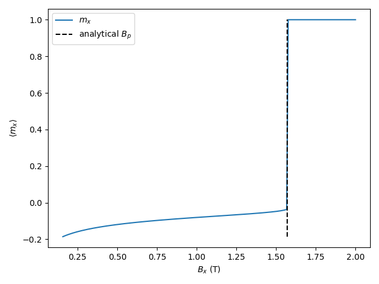

Standard Problem: Domain Wall Pinning#
This script solves the proposed micromagnetic standard problem about domain wall pinning at a boundary between a soft and a hard magnetic phase, with an external magnetic field pointing to the right. The question is at what magnetic field strength the domain wall unpins and moves to the right.
The proposed solution uses time evolution (run) with a continuously increasing field strength. The solution used here uses a series of steps of increasing magnetic field strength, minimizing the energy at each step. This yields the same pinning field, but faster.
import matplotlib.pyplot as plt
import numpy as np
from tqdm import tqdm
from mumaxplus import Ferromagnet, Grid, World
from mumaxplus.util.constants import MU0
def analytical_pinning_field(A1, A2, K1, K2, Ms1, Ms2):
"""Returns the minimum field strength in Tesla at which the domain wall
unpins from the boundary between phases 1 and 2.
"""
return 2 * K2 / Ms2 * (1 - K1/K2 * A1/A2) / (1 + np.sqrt(Ms1/Ms2 * A1/A2)) ** 2
# material parameters
Asoft = 0.25e-11
Ahard = 1.0e-11
Ksoft = 1e5
Khard = 1e6
Ms_soft = 0.25 / MU0
Ms_hard = 1 / MU0
# choose combination of soft and hard parameters for phases 1 and 2
A1, K1, Ms1 = Asoft, Ksoft, Ms_soft
A2, K2, Ms2 = Ahard, Khard, Ms_hard
cx, cy, cz = 1e-9, 1e-9, 1e-9
nx, ny, nz = 80, 1, 1 # each phase 40 nm long
world = World((cx, cy, cz))
magnet = Ferromagnet(world, Grid((nx, ny, nz)),
regions=lambda x,y,z: 1 if x < (nx - 1) / 2 * cx else 2) # left 1, right 2
magnet.enable_demag = False # disabled for simplicity
magnet.anisU = (1, 0, 0)
magnet.alpha = 1.0
# left
magnet.aex.set_in_region(1, A1)
magnet.ku1.set_in_region(1, K1)
magnet.msat.set_in_region(1, Ms1)
# right
magnet.aex.set_in_region(2, A2)
magnet.ku1.set_in_region(2, K2)
magnet.msat.set_in_region(2, Ms2)
# magnetic field steps
B_pin = analytical_pinning_field(A1, A2, K1, K2, Ms1, Ms2)
Bx_min = 0.1 * B_pin # prevent DW from being pushed out on the left side
Bx_max = 2
Bx_steps = 200 + 1
Bx_array = np.linspace(Bx_min, Bx_max, Bx_steps)
# initial configuration
magnet.bias_magnetic_field = (Bx_min, 0, 0)
magnet.magnetization = lambda x, y, z: (1.0, 0.3, 0.0) if x < magnet.center[0] else (-1.0, 0.3, 0.0)
magnet.relax() # relax to initial configuration
mx_list = []
for Bx in tqdm(Bx_array):
magnet.bias_magnetic_field = (Bx, 0, 0)
magnet.minimize()
mx_list.append(magnet.magnetization.average()[0])
# plot
plt.plot(Bx_array, mx_list, label="$m_x$")
plt.plot([B_pin, B_pin], [min(mx_list), max(mx_list)], c="k", ls="--", label="analytical $B_p$")
plt.xlabel("$B_x$ (T)")
plt.ylabel(r"$\langle m_x \rangle$")
plt.legend()
plt.tight_layout()
plt.show()

